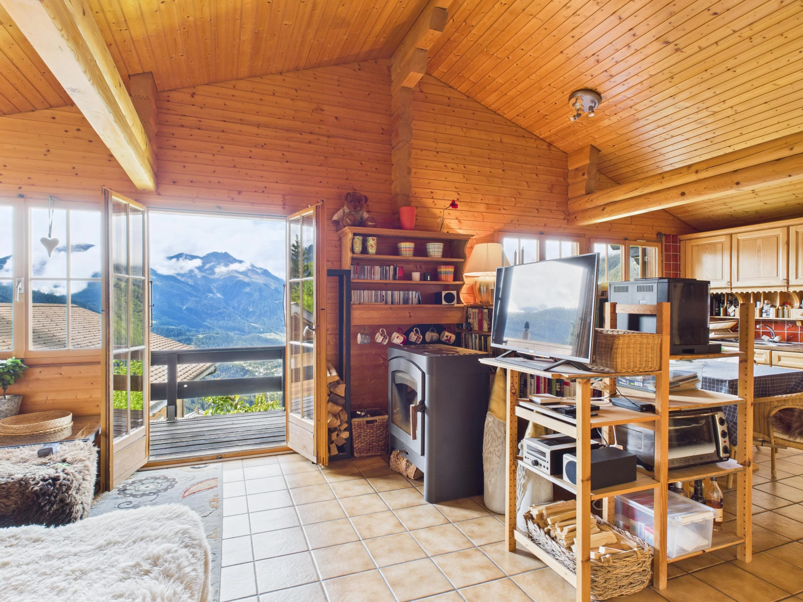

1 / 17OBERGESCHOSS
Belalp
Licht, Holz und ein grosszügiger Blick. Mit offener Galerie für lange Abende und zusätzliche Schlafplätze.
- 2 Schlafzimmer + offene Galerie
- Küche · Dusche/WC · WLAN · Waschmaschine
- Rundum-Balkon mit Weisshornblick
Saisonpro Nachtpro Woche
BasiszeitCHF 200CHF 1’350
SommerCHF 220CHF 1’450
HerbstCHF 250CHF 1’650
Winter inkl. Feiertage & SportferienCHF 280CHF 1’850